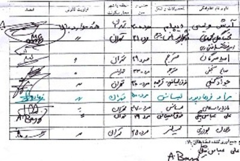

پذيرش > تریبون > گفت و گو > دال استثنائی زنان
 گفتگو با صالح نجفی گفتگو با صالح نجفی

 دال استثنائی زنان دال استثنائی زنان
18 شهریور 1387 - مازیار سمیعی - نسخه قابل چاپ
روشنفکران حلقه "رخداد" چندی پیش به جمع امضاکنندگان بیانیه کمپین یک میلیون امضا برای تغییر قوانین تبعیض آمیز پیوستند. حلقه رخداد به مدد فلسفه، روانکاوی، نقد ادبی و... افق های جدیدی را برای تفکر می گشاید، به ویژه در زمانه ای که اندیشیدن بیش از پیش امری بیهوده به نظر می رسد. این حلقه خود را به ارزش ها و آرمان های انقلاب 57 و واقعه دوم خرداد وفادار می داند و از این حیث نامش نیز بی ارتباط با این دو "رخداد" نیست. ادبیات روشنفکران این حلقه با آن چه غالبا از روشنفکران چپگرا، اما سنتی ایرانی شنیده ایم متفاوت است. مراد فرهاد پور، صالح نجفی، امید مهرگان، امیرهوشنگ افتخاری، روزبه کریمی، مازیار اسلامی و... از جمله رخدادی های امضا کننده بیانیه کمپین هستند. به این بهانه مصاحبه ای با صالح نجفی، نویسنده و مترجم انجام داده ایم.

م.س: چرا پس از نزدیک به دو سال از شروع کمپین یک میلیون امضا از آن حمایت کرده اید؟ آیا در آغاز نسبت به محتوای آن دچار تردید بودید؟به چشمتان نمی آمد؟ ویا تغییری در موقعیتش پدید آمده که شما را به حمایت از آن ترغیب کرده است؟
ص.ن: علتش فقط بی اطلاعی بوده است که البته به هیچ وجه عذر موجهی نیست. نسبت به محتوای چنین پروژه ای به نظرم اصلا نباید زیاد حرف زد، مهم این است که در غیاب جنبشی که بتواند تاثیر عینی و احیانا بی واسطه ای در وضعیت موجود بگذارد، هر صدایی که اشاره ای به مستله زنان در ایران داشته باشد مغتنم است، خاصه که این صدا از متن این وضعیت برخیزد، چون همه می دانیم پا را از این مرزها که بیرون بگذاری حد و حدود گفتارت را مقتضیات دیگری رقم می زنند مگر آن که بروی و بازگردی و... روی هم رفته حمایت از این صدا برای هر گفتار رهایی خواهی یک اصل موضوع متقن است و به تعبیر محمدرضا نیکفر، اکتفا کردن به بحث ها و مطالبه هایی که حول تصور «عدالت اقتصادی» می گردند و به هر علتی، نادیده گرفتن جایگاه کنونی زنان و نسبتش با مجموع قوانین نوشته و نانوشته ایران حال حاضر نافی هرگونه دعوی چپ بودن و آزادی خواهی است.
م.س: حمایت از کمپین حمایت از چیست؟ حرکتی فمینیستی؟ خواستی لیبرالی برای تغییر قانون؟ جزیی از جنبش دموکراسی خواهی؟ یا...؟
ص.ن: حمایت از «کمپین» زیر هر عنوانی، به شرط پافشاری بر خصلت سیاسی و موقعیت استثنایی زنان در ایران، یک جور اعلام وفاداری به سیاست رهایی بخش است، به شرطی که آن را در ردیف مطالبه حقوق عادی شهروندی قرار ندهیم. انسان ها از آن حیث که حیوانند حقوقی دارند که در پرداخته تری شکل به صورت حقوق بشر مدون می گردد اما «زنان» به عنوان دالّ استثنایی در همه موارد عادی وضعیت ادغام می گردد و هر گزاره سیاسی رادیکال یا رهایی بخش لاجرم باید تکلیفش را با آن روشن کند. دالّی که همه مظاهر قدرت مازاد دولت را بحرانی می کند و در بین عناصر تکین و منفرد وضعیت ، زمینه را مهیای تشکیل عرصه مستعدّ رخداد (eventual site) می سازد...
م.س: از نظر شما افق سیاسی کمپین چیست؟
ص.ن: افق سیاسی کمپین را موقعیت استثنایی زنان در وضعیت اجتماعی ایران و جایگاه «دال» زنان در گفتار رسمی و دولتی موجود تعیین می کند. توضیح این که «زنان» از چه حیث دال استثنایی و مقوّم گفتار حاکم در ایرانند به توضیح و تبیینی کم و بیش فلسفی نیاز دارد. مساله به رابطه «حذف» و «ادغام» (inclusion/exclusion) برمی گردد که فیلسوف معاصر ایتالیایی معاصر جورجو آگامبن به بهترین وجه آن را صورت بندی کرده است و البته در کنار آن باید از نوعی هستی شناسی مدرن برای خواندن تجربه و وضعیت انضمامی مان یاری بگیریم تا استثنا بودن زنان و نسبتش با توان بالقوه وضعیت برای دگرگونی و امکان وقوع رخداد یا ادامه وفاداری به رخدادهای سیاسی پیشین روشن گردد و برای این منظور باید به سراغ قرائت فلسفی و نبوغ آمیز آلن بدیو از «نظریه مجموعه ها» برویم.
ببینید، آگامبن به دقت نشان داد است که حذف و ادغام هر دو به دو نحو در هر وضعیت و قانونی با هم ترکیب می شوند،یک بار به صورت ادغام حذفی(یعنی ادغام از راه حذف) و یک بار به صورت حذف ادغامی(یعنی حذف از راه ادغام). به گمانم می توان نشان داد که ویژگی بارز وضعیت اجتماعی ایران از فردای استقرار تمام عیار جمهوری اسلامی و کانالیزه شدن کامل پتانسیل های انقلاب 57 در گفتار «حکومت اسلامی» و خرج مابقی آن در جنگ 8 ساله(یکی از طولانی ترین جنگ های عصر مدرن)، این بوده که «زنان» به طرز غریبی نمایانگر تمیزناپذیری «مثال» و «استثنا» در وضعیت ایران بوده اند. آگامبن با ظرافت نشان داده است که «مثال» همواره از مجموعه حذف می گردد منتها از آن حیث که به آن تعلق دارد؛ اما «استثنا» در موارد عادی ادغام می گردد منتها دقیقا از آن روی که بدان ها تعلق ندارد. به بیان دیگر، «استثنا» همان چیزی است که نمی تواند در آن کلی (the whole) یا مجموعه (بخوانید وضعیتی) ادغام گردد که خود عضو آن است، مچنین نمی تواند عضوی از آن مجموعه باشد که همیشه از قبل در آن ادغام شده است. این قضیه نیاز به مثال و توضیح دارد. اما قبل از آن، اجازه دهید قرائت هستی شناختی بدیو را هم در کنار تفسیر آگامبن بگذاریم تا مقدمات بحث تکمیل گردد.
نظریه اصل موضوعی مجموعه ها (axiomatic) بر اساس دو رابطه بنیادی تدوین می شود: عضویت و زیرمجموعگی یا به بیان سیاسی همان ادغام (inclusion, membership) . به تعبیر بدیو، عضویت همواره در تراز «عرضه» (presentation) یا «وضعیت» طرح می شود و ادغام همواره در تراز «بازنمایی» (representation) یا «دولت» حاکم بر وضعیت. بنابراین، اگر نقطه شروع را عناصر یک وضعیت و در بحث ما موقعیت زنان بگیریم، هر عنصری از حیث رابطه اش با وضعیت(جایگاهش از منظر جامعه) و با دولت(چند و چون بازنامیی اش) در ذیل یکی از سه مقوله زیر جای می گیرد: نخست عناصری که هم عضوند و هم ادغام می شوند(عناصر نرمال وضعیت)_مسلم است که دولت همواره در صدد عادی کردن و عادی نمودن وضعیت است_ در لیبرالیسم هم کمال مطلوب را همین حالت می گیرند که به تعبیری همان آرمان خیالی انطباق دولت بر وضعیت اجتماعی یا حذف فاصله میان دولت و جامعه است. ین به تعبیر بدیو، دروغ ساختاری دولت است و به نظر من، فصل مشترک پوپولیسم و لیبرالیسم.
عنصر دوم آن است که نمایی می شود، یعنی ادغام می گردد، بی آن که عضو باشد، بدیو این گروه را عناصر سربار یا مزید (excrescent) می نامد، نشانه های این عناصر را در دم و دستگاه بروکراتیک و نظامی دولت می توان دید یا گاهی در عناصر چند منصبی حکومت که بر روی هم رفته حافظ منافع طبقه حاکم یا دم و دستگاه ایدئولوژیک دولتند. مساله این است که دولت در مقام «فراساختار» (metastructure) یا ساختارِ ساختار جامعه و به حکم اصل مازاد در نظریه مجموعه ها همیشه یک چنین عناصری ایجاد می کند(در نظریه مجموعه ها،تعداد اعضای مجموعه زیر مجموعه های یک مجموعه بی نهایت عضوی همواره از تعداد اعضای آن مجموعه بیشتر است و مجموعه همه زیر مجموعه ها همان مجموعه توانی [powerset است که بیانگر قدرت مازاد و بی نهایت بزرگ تر دولت نسبت به یک وضعیت است).
عنصر سوم بالعکس عضو وضعیت هست ولی بازنمایی نمی شود، عضوهایی که ادغام نمی شوند . به عنوان مثالی بسیار ساده خانواده ای را در نظر بگیرید که عضو وضعیت اجتماعی هست ولی عضوی دارد، مثلا بچه ای، که شناسنامه ندارد یعنی در دفتر اسناد رسمی نامش درج و ثبت نشده، مطابق با نظریه مجموعه ها این خانواده(عضو) زیرمجموعه وضعیت نیست یعنی ادغام نمی شود. بدیو چنین عناصری را منفرد یا تکین(singular) می خواند.
جایی که بدیو و آگامبن به یکدیگر می رسند در تبیین جایگاه «استثنا» است. استثنا نقطه ای است که عضویت منهای ادغام (singularity) و ادغام منهای عضویت(excrescence) ازهم تمیز ناپذیر می شوند. استثنا حدّ مرزی دو رابطه مذکور است.کار دولت از طرفی طبیعی جلوه دادن عناصر مزید یا سربار به عنوان نهادهای قانونی ضروری و از طرف دیگر عادی جلوه دادن عناصر منفرد یا تکین وضعیت است. زنان دقیقا در ایران نماینده این نقطه استثنایی اند. این قضیه را می توان با کمک روان کاوی روشن تر نمود که اگر فرصتی باشد بیان خواهم کرد.
م.س: اغلب اعضای کمپین از ترسیم افق سیاسی برای آن خودداری می کنند. آیا این امر موجب نمی شود که آن ها به بستر سیاست و ایدئولوژی مسلط بغلتند؟
ص.ن: بنا به توضیحی که درباره «استثنا» بودن زنان دادم، باید گفت پرهیز از ترسیم افق سیاسی یا بهتر بگویم انکار این افق سیاسی مسلما مبارزه را عقیم می کند. کار ایدئولوژی دقیقا نفی استثناست و تاویل و تحویل آن به استثنای حاکم است که به زعم آگامبن خود «تکین بودن» را بازنمایی می کند، یعنی آن چه را ادغام نمی شود در قالب استثنا ادغام می کند(حذف ادغامی). جور دیگر بگویم، ترفند ایدئولوژی مصادره استثنای حقیقی وضعیت است. نکته ای که در وضعیت کنونی ایران در موقعیت زنان و محوریت عجیب و غریب مساله بی بند و باری زن انعکاس می یابد. کافی است به تساوی بی بند و باری با بی حجابی یا شل حجابی و یا تعبیر مبهم و بی معنای«بد»حجابی دقت کنید. استثنا خواندن زنان و توجه به سندرم حجاب را می توان از راه مقایسه زنان با دیگر حذف شدگان در نظر گیرید، مثلا هم جنس خاهان. فرض کنید دو پسر هم جنس خواه در ایران با هم به سفری بروند و شبی را در هتلی با هم بگذرانند. مسلما نهادهای قانونی جلوی آن ها را نمی گیرند، هرچند آن دو را به عنوان دو هم جنس خواه نمی بینند و حذف می کنند ولی آن دو می توانند از نهادهای وابسته به دولت استفاده کنند. در مقابل دختر و پسری را درنظر بگیرید که در وضعی مشابه قرار گیرندو آن دو اگر به صورت رسمی به عقد هم درنیامده باشند اجازه برخورداری از مواهب مربوط را نخواهند داشت و ممکن است توقیف هم بشوندو... تصویر زنی که بدون حجاب در خیابان راه می رود از نظر گفتار رسمی و در نظام بازنمایی ایران همه چیز را نشان می دهد، به ویژه که در مقابل، در قوی ترین و بارزترین نماینده ایدئولوژی ایران یعنی تلویزیون پیوسته زنان بی حجاب خارجی نمایش داده می شوند و نه فقط غیر مسلمان بلکه زنان مسلمان غیر ایرانی بی حجاب. سندرم حجاب به انضمام زیبایی و هر چه به انتخاب فردی یک زن باز می گردد مدام به هسته اصلی حکومت اسلامی ما اشاره می کند. دختر «مسلمان» ایرانی که می خواهد حجاب نداشته باشد فقط یک راه دارد: باید بالکل از وضعیت خارج شود و اگر بماند عملا ،به زبان نظریه مجموعه ها ، هم عضویت و هم امکان ادغام را از کف می دهد: عضو مجموعه ای می گردد که عضوی ندارد، مجموعه تهی.
م.س: کمپین هویتی متکثر و موزاییکی دارد. از فتاوی مراجع تقلید تا ادبیات فمینیستی رادیکال را می توان در آن سراغ گرفت. آن نقطه و افقی که همه این ها را معنا می کند چیست؟
ص.ن: آن نقطه به طور قطع زخمی است که گفتار رسمی دچارش است و به زبان روان کاوی به آن می گویند تروما. تروما در پزشکی عمومی به هر آسیب ساختاری که بر بدن وارد می آید اطلاق می شود و به صورت زخم و سوختگی و شکستگی نمایان می گردد. در روان پزشکی، به هر تجربه غیر منتظره می گویند که اختلالی در روان بیمار پدید آورد و مثلا به صورت «شوک» ظاهر شود. در روان کاوی به هر تجربه ای گفته می شود که مکانیسم های دفاعی را به کار می اندازد و موجب «اضطراب» می شود. همین سه تمثیل برای روشن کردن موقعیت زنان کفایت می کند. رابطه دو جنس و البته درست تر بگوییم رابطه زن با مردی نامحرم بدون اجازه مراجع قانونی همه چیز را به هم می ریزد و به تعبیر روان کاوی مکانیسم های دفاعی حکومت را به کار می اندازدیا ساده تر بگوییم به گفتار رسمی شوک وارد می کند. فرض کنید زنی با روزنامه ای مصاحبه کند و بگوید از سر عشق یا دل باختن به مردی غریبه رابطه ای دور از چشم شوهرش برقرار کرده، قضیه به هیچ وجه اخلاقی نیست که مثلا از شوهرش بخواهیم ایثار کند یا بزرگواری کند یا مثلا با مهربانی او را ترک کند تا به معشوقش بپیوندد. از این گذشته، تروما(همان طور که از فروید آموخته ایم) رابطه ای بنیادی با تکرار دارد و گفتار رسمی از آن جهت که قادر به یادآوری یا بازنمایی اش نیست مدام بدان واکنش نشان می دهد و اصلا همه مکانیسم هایش به نوعی بر گرد همان مساله تعین می یابد. در مقابل، همین تروما، همین نقطه شکست دولت در بازنمایی (همین که گفتار رسمی به هیچ وجه نمی تواند دختران ایرانی مسلمانی را نشان دهد که نمی خواهند حجاب داشته باشند) ،به همه قطعات پازل کمپین معنا می دهد، به شرطی که تک تک این قطعات «استثنا» بودن دال زنان را در متن نظام دلالت ایران امروز لحاظ کنند.
م.س: به رغم اینکه کمپین ،به گفته فعالانش، سیاسی نیست شاید از جنس آن چیزی باشد که شما "سیاست مردم" می دانید. چه مشخصه هایی آن را به سیاست مردم بدل می کند؟
ص.ن: مسلما چنین است. «زنان» از آن جهت که به ترک گفتار رسمی اشاره دارد_همان ترکی که پوشاندنش شرط بقا و دوام گفتار حاکم است_به اصل موضوع «مردم فکر می کنند» بر می گردد. آن فعالان کمپین که به تفکیک سیاست از دولت قائل نیستند، سیاسی بودن ذاتی هر گفتاری را که گرد دال «زنان» می گردد درک نمی کنند.
م.س: اگر جنبش زنان "سوژه بیان" باشد می توان کمپین را "سوژه بیان شده" تلقی کرد؟ اگر این چنین است چه چیزی در سوژه کشته شده تا به این صورت بیان شود؟
ص.ن: سوژه ای که می گویید دقیقا آگاهی اش را نسبت به فاصله آن چه می گوید و جایگاهی که از آن سخن می گوید از دست داده است؛فاصله ای که شرط لازم برای سیاسی بودن است. درحل مساله زنان اگر قاب وضعیت(یعنی سامان بازنمایی وضعیت) تغییر نکند، به معنای سرکوب وجه سیاسی گفتار معطوف به رهایی زنان خواهد بود. کافی است استثنای زنان و استثنای حاکم تمیزناپذیر شوند(هنگامی که مساله زنان در دیالکتیک بی ثمر خشونت حافظ قانون و خشونت واضع قانون گرفتار آید) تا مججموع فعالیت های کمپین معنای سیاسی و رهایی بخش خود را از کف بدهد: مساله زنان می باید با عیان کردن گره خوردگی قانون جاری با خشونت، قاب قانون را دگرگون سازد. از این حیث است که زنان به نوعی و به تعبیری نقش پرولتاریای قرن نوزدهمی مارکس را دارند.
م.س: چرا مساله زن ناگهان به پای ثابت گفتار های مختلف ،از چپ ارتدوکس تا اسلام سنتی، بدل شده است؟
ص.ن: قضیه به نظرم چندان ناگهانی نیست، گو این که حالا از همیشه بارزتر شده. همان طور که گفتم با یگانه شدن کاذب انقلاب 57 با رفراندوم 58 و سپس با ادغام رخداد دوم خرداد در پروژه دولتی اصلاحات، امکان نام گرفتن خلاء وضعیت از دست رفت، خلائی که سندرم حجاب و ترومای همیشگی زنان در حافظه گفتار رسمی پیوسته بدان اشاره داشته است. تنها چیزی که می توانم به این اضافه کنم این است که نباید از رابطه ساختاری و بنیادی مساله زن با زبان وضعیت و حوزه نمادین ایران غافل شویم...
م.س: وسوسه نمی شوید که به سیاقی که لاکان می گوید "زن نشانگان مرد است" جنبش زنان را نشانگان جنبش های اجتماعی امروز ایران بدانید؟
ص.ن: مسلما، البته باید گفت «وسوسه این نیست، مساله این است! » البته اگر سیاق لاکانی را اصل بگیریم، باید گفت از نظر او «زن وجود ندارد». به نظر او زن فقط وقتی جذاب می شود که وارد جهان فانتزی مرد گردد. این گزاره عجیب، دلالت های ضمنی مهمی دارد. فانتزی گفتار رسمی ما دقیقا بر پایه غیاب زن در عرصه بازنمایی ساخته می شود و البته در جهان فانتزی است که آن چه غایب است می تواند حضور بیابد. از این منظر حواس مان باشد که فانتزی ایرانی با فانتزی دیگری غربی قوام می یابد، این که زن فقط به قیمت سقوط در ظلمات کفر و شرک می تواند زیبایی دنیوی خود را عرضه کند، حتی اگر بخواهد این زیبایی را در تلویزیون ایران به نمایش بگذارد، نمایانگر بیماری ریشه ای وضعیت اجتماعی ما و بیمارگونگی فانتزی مرد ایرانی است: زن از آن جهت که زن است یا باکره است یا فاحشه، دو سیمایی که به انحای مختلف در فانتزی مردانه بر هم منطبق می شوند و به جهت غیبت سیمای «فم فاتال» (زن افسونگری که محصول انطباق زیبایی و شرّ است) در جهان تصاویر سینمایی، لاجرم «فم فاتال» همان سیمای غالب «زن» در فانتزی مرد ایرانی می گردد. «زن» بدین معنا «سمپتوم» مرد است: مساله زنان گره گاهی است که در آن مناسبات مدرن و سننتی جامعه ما به هم می پیچند. مساله زنان علامت بیماری ریشه ای جامعه بحران زده ما است...
م.س: ناسازگاری های کمپین چیست؟
ص.ن: ناسازگاری های کمپین را به گمانم باید در همان گفته فعالانش جست که تاکید بر غیر سیاسی بودنش دارند، گو این که در فضای گفتاری که سیاست و دولت را جدایی ناپذیر می داند، سیاسی بودن را باید در ایراد گزاره هایی تعبیر کرد که اصل «مردم فکر می کنند» را پایه هر تصمیم و تجویزی می گیرد.
م.س: در نوشته های شما، که بر پایه های روانکاوی هم استوارند، اثر چندانی از سکسوالیته دیده نمی شود. زنان که سرکوب شدگان بی واسطه سرکوب سکسوالیته اند نیز کمتر از آن سخن می گویند. آیا علت سرکوب اروس در این هر دو است؟
به این ضعف معترفم هر چند من در مقاله «تلویزیون به مثابه یوتوپیا» تا حد توانم سندرم حجاب را پیش کشیدم. بگذریم از این که در تاریخ روان کاوی هم بحث «تفاوت جنسی» فراز و نشیب های زیادی داشته. ولی همان طور که شما گفتید مساله سرکوب اروس در همه این اهمال ها نقش تعیین کننده دارد. تا آن جا که به لاکان بر می گردد، بنیان هر عمل نمادین، پذیرفتن یک جایگاه جنسی است، تفاوت بین دو جنس را فقط در سطح نمادین می توان تصور کرد. مساله تغییر همین تراز نمادین است که مطلقا از چنگ اراده فردی می گریزد، زیرا همان طور که در فلسفه نشانه ها گفته شده، نمادها متکی به قرارداد و مستقل از معیارهای شبهت و پیوند وجودی و امثالهم هستند. عرصه نمادین هم ارز قانون است. خروج از عرصه نمادین به معنای حذف کامل یا خروج کامل از وضعیت است، چیزی که امکان کوچک ترین فعالیتی را بر می دارد. مساله بر سر وفاداری به رخدادی است که امکان می دهد تا با استناد به سمپتوم ها گفتار رسم را با ترومایش رو در رو و وادار به دست زدن به مکانیسم های دفاعی کنیم، روندی که ترک های آن گفتار را عمیق و عمیق تر می کند. تداوم سرکوب اروس در گرو سیاست زدایی است و این همان خطری است که کمپین را و هر گفتار رهایی بخش را تهدید می کند...
ارسال به
بالاترین
،
توییتر
،
فریندفید
،
فیسبوک
در همين بخش :
 دهمین دورۀ مراسم تندیس صدیقه دولت آبادی ۱۳۹۲ دهمین دورۀ مراسم تندیس صدیقه دولت آبادی ۱۳۹۲
کارت پستالهایی به بهانهی هشت مارس و به یاد همهی مبارزین راه برابری
بیانیه بیش از 350 تن از مدافعان حقوق زنان به مناسبت روز جهانی زن؛ زنان هر روز فرودستتر میشوند
لباسی که برای تن ما دوخته اند! /اعظم بهرامی
چالشها و چشمانداز فعالیت مدنی زنان
ديگر بخش ها :
طرح یک میلیون امضا
|
مقالات
|
سایت نوشته ها
|
اخبار
|
گزارش كمپين
|
گفت و گو
|
علیه سکوت
|
كوچه به كوچه
|
نامه های شما
|
گزارش ویژه
|
گفتگو با اعضا
|
ویژه سالگرد کمپین
|
تصویر برابری
|
دل آرام علی
|
تریبون
|
مقالات
|
تاریخ شفاهی
|
خارج از چارچوب
|
کتابخانه
|
درباره کمپین
|
کمپین در شهرها
|
کمپین در بند
|
صدای تغییر
|
ویژه 22 خرداد
|
لایحه حمایت از خانواده
|
گالری
|
عشا مومنی
|
امیر یعقوبعلی
|
خدیجه مقدم
|
راحله عسگری زاده و نسیم خسروی
|
پروین اردلان،جلوه جواهری، مریم حسین خواه، ناهید کشاورز
|
زینب پیغمبرزاده
|
سعیده امین، سارا ایمانیان، محبوبه حسین زاده، ناهید کشاورز و همایون نامی
|
احترام شادفر
|
نسیم سرابندی زاده،فاطمه دهدشتی
|
وبلاگ مهمان
|
پرونده خرم آباد
|
دستگیری ها
|
مریم مالک
|
پرستو اللهیاری
|
مهرنوش اعتمادی
|
سمیه رشیدی
|
Other Languages
|
همراهان
|
«فراخوان کمپین ده روز با بهاره هدایت»
| English
|